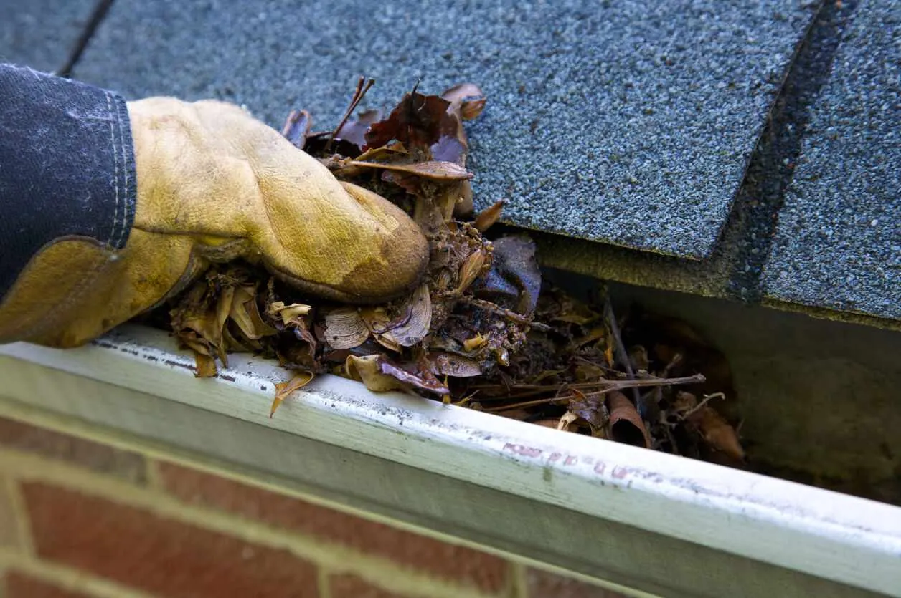

Cleaning your gutters regularly is an essential part of roof maintenance, especially in Utah where the fall leaves can quickly clog gutters and downspouts. But if you don’t have a lot of experience with the task, it’s important to do some research before you get started. If you don’t take proper safety precautions, cleaning gutters could put you at risk of injury.
Follow these tips from the experts at American Roofing so you know the best way to clean your gutters safely and effectively. 
Why Clean Your Gutters?
Before we dive into our gutter cleaning tips, let’s address one question: Why is it so important to clean your gutters?
No matter where you live in Utah, your gutters will eventually get clogged with falling leaves, dirt, and other debris that naturally collect over time. You might even have pests nesting in your gutters without knowing it. As this debris builds up in your gutters, it prevents water from freely flowing away from your house. If your gutters are clogged and a rain or snowstorm hits, your roof could be at risk of water leaks, mold growth, and more.
By regularly cleaning your gutters and downspouts, you’ll minimize the likelihood of having to deal with these types of costly repairs. You’ll also increase the lifespan of your gutters and your roof, putting even more money back in your pocket. The time it takes to clean gutters is well worth it.
When to Clean Your Gutters
With Utah’s distinct and robust four seasons, it’s best to clean your gutters at least twice a year, usually in the late spring and fall.
Spring: As snow melts and the weather warms, gutters often fill with winter debris like twigs, dirt, and ice remnants. This is also a good time to check for any damage caused by ice dams or heavy snow loads.
Fall: Before winter storms arrive, be sure to clear out fallen leaves, pine needles, and twigs. These can clog gutters quickly and lead to dangerous ice buildup once the snow falls.
Summer & Winter: After major wind or rainstorms, it’s smart to do a spot-check. In summer, this helps address damage from flash thunderstorms or high winds. In winter, occasional thaws can reveal blockages or allow a safe opportunity to clear gutters before the next freeze.
If you notice your gutters need cleaning at other times of the year, don’t hesitate to handle the task as needed. Clean gutters protect your roof, siding, and foundation all year long.
How Much Does It Cost to Have Someone Clean Your Gutters?
The best way to ensure your safety and have clean gutters is to hire a professional to do the job. How much should you expect to pay for this service? In short, it depends on where you live and the rates of the company you hire. Gutter cleaning costs usually range from about $75 per job to $350 per job, with a national average of $157 per job.
How Do You Clean Gutters Yourself?
If you’re interested in taking the DIY route to gutter cleaning, there are several ways you can go about it—while still maintaining your safety. Make sure you have the right tools and proper attire to minimize risk while you’re tackling the job.
Gutter Cleaning Tools & What to Wear
First, change into a long-sleeved shirt that you don’t mind getting dirty. This will keep your arms from getting cuts or scratches while you clean the gutters. Then, grab some rubber gloves to protect your hands. Be sure to keep them on throughout the cleaning process.
Once you’re dressed, collect all the gutter cleaning tools you’ll need. The required tools depend on the gutter cleaning method you choose, but here are some of your options:
- Extendable ladder
- Plastic scoop (for clearing out the gutter)
- Plastic tarp (to catch falling leaves and debris)
- Garden hose (to wash away leftover dirt and grime)
- Leaf blower
- Pressure washer
Increase your safety by testing out the ladder before you start to clean the gutters. Have someone else stand nearby to ensure that the ladder is stable and secure before you climb up. If you’re using a leaf blower or pressure washer, make sure they’re properly charged or plugged in with an extension cord before you climb the ladder.
Gutter Cleaning Methods
Choose the gutter cleaning method that makes you feel the most comfortable. Here are a few of the most common ways to safely clean your gutters:
- From the Ground: Not comfortable with climbing a ladder? No problem. You can also clean your gutter from the ground using a long gutter cleaning tool.
- With a Ladder: If you have a safe and secure ladder, you can use it to clean the gutters with the help of a hand scoop, leaf blower, or pressure washer.
- Leaf Blower: Some homeowners choose to take a leaf blower with them when they climb a ladder to clean out gutters. This can tackle the job quickly, but make sure you have someone close by to support the ladder.
- Pressure Washer: This is another quick and effective way to clean your gutter, but it’s crucial to make sure you’re steady and have plenty of slack in the cord before you get started. (You can make this cleaning method even safer by standing on the ground and using a power sprayer extension.)
Time to Clean Those Gutters
Now that you know the best way to clean gutters safely, you’re ready to get those gutters sparkling and fresh. Remember to dress appropriately, use the right tools, set up your ladder properly, and always put safety first.